estimation_start <- -130L
estimation_end <- -31L
event_start <- -30L
event_end <- 30L
minimum_estimation_observations <- 80L
tbl_window_parameter <- tribble(
~parameter, ~value,
"estimation_start", estimation_start,
"estimation_end", estimation_end,
"event_start", event_start,
"event_end", event_end,
"minimum_estimation_observations", minimum_estimation_observations
)
tbl_window_parameter
#> # A tibble: 5 × 2
#> parameter value
#> <chr> <int>
#> 1 estimation_start -130
#> 2 estimation_end -31
#> 3 event_start -30
#> 4 event_end 30
#> 5 minimum_estimation_observations 80第I-6章 イベントスタディ
本章では、企業の決算発表を対象としてイベントスタディを行う。イベントスタディは、企業イベントの前後に観察された株式リターンから、通常時に予想されるリターンを差し引き、イベント固有の株価反応を測定する方法である。
本章では、次の処理を順番に行う。
- 個別株リターン、市場リターン、イベント情報を読み込む
- 決算サプライズを計算し、イベントを5群に分類する
- 発表日の翌取引日をイベント日0として設定する
- 推定期間を使ってイベントごとのマーケット・モデルを推定する
- 異常リターンと累積異常リターンを計算する
- AAR、CAAR、複数のイベント・ウィンドウについて統計的検定を行う
- 決算サプライズと短期CARの関係を確認する
- イベント単位と日次集計の結果を保存する
6.1 イベントスタディの基本設計
6.1.1 マーケット・モデル
企業 \(i\) の日 \(t\) における実現リターンを \(R_{i,t}\)、市場リターンを \(R_{M,t}\) とする。推定期間では、次のマーケット・モデルを推定する。
\[ R_{i,t} = \alpha_i + \beta_i R_{M,t} + \varepsilon_{i,t} \]
推定された通常リターンは次式で表される。
\[ \widehat{R}_{i,t} = \widehat{\alpha}_i + \widehat{\beta}_i R_{M,t} \]
異常リターン \(AR_{i,t}\) は、実現リターンと通常リターンの差である。
\[ AR_{i,t} = R_{i,t} - \widehat{R}_{i,t} \]
イベント期間の開始日から日 \(t\) までの累積異常リターン \(CAR_{i,t}\) は、異常リターンを累積して計算する。
\[ CAR_{i,t} = \sum_{\tau=T_1}^{t} AR_{i,\tau} \]
6.1.2 分析期間
本章では、イベント日0を基準として次の期間を使用する。
| 期間 | 相対取引日 | 用途 |
|---|---|---|
| 推定期間 | -130日から-31日 | マーケット・モデルの推定 |
| 事前イベント期間 | -30日から-1日 | 発表前の株価反応 |
| イベント日 | 0日 | 発表後最初の取引日 |
| 事後イベント期間 | 1日から30日 | 発表後の株価反応 |
推定期間は100取引日、イベント期間は61取引日である。マーケット・モデルの推定には、最低80観測を必要とする。
6.1.3 分析環境
プロジェクトルートとデータディレクトリを確認する。
vec_project_candidate <- unique(c(
Sys.getenv("QUARTO_PROJECT_DIR"),
getwd(),
dirname(getwd())
))
vec_project_candidate <- vec_project_candidate[
nzchar(vec_project_candidate)
]
vec_project_match <- vec_project_candidate[
file.exists(file.path(vec_project_candidate, "_quarto.yml"))
]
if (length(vec_project_match) == 0L) {
stop("LagrangeFinanceのプロジェクトルートを確認できません。")
}
project_dir <- normalizePath(
vec_project_match[[1]],
winslash = "/",
mustWork = TRUE
)
data_dir <- get_data_dir_LFL()
raw_event_data_dir <- file.path(
data_dir,
"raw",
"events"
)
derived_event_data_dir <- file.path(
data_dir,
"derived",
"events"
)
dir.create(
derived_event_data_dir,
recursive = TRUE,
showWarnings = FALSE
)
tibble(
directory = c(
"project",
"raw_events",
"derived_events"
),
path = c(
project_dir,
raw_event_data_dir,
derived_event_data_dir
)
)
#> # A tibble: 3 × 2
#> directory path
#> <chr> <chr>
#> 1 project C:/AnalyticFin/Projects/LagrangeFinance
#> 2 raw_events C:/AnalyticFin/Projects/LagrangeFinance/data/raw/events
#> 3 derived_events C:/AnalyticFin/Projects/LagrangeFinance/data/derived/events6.2 入力データの読み込みと検証
6.2.1 入力ファイル
本章では次の3ファイルを使用する。
data/raw/events/firm_returns.parquet
data/raw/events/market_returns.parquet
data/raw/events/earnings_events.parquetファイル名はデータの内容を表す名称に統一し、Parquet形式で読み込む。
vec_input_file <- c(
return = file.path(
"raw",
"events",
"firm_returns.parquet"
),
market = file.path(
"raw",
"events",
"market_returns.parquet"
),
event = file.path(
"raw",
"events",
"earnings_events.parquet"
)
)
vec_input_path <- purrr::map_chr(
vec_input_file,
find_data_file_LFL
)
tibble(
data_name = names(vec_input_path),
file_name = basename(vec_input_path),
path = unname(vec_input_path)
)
#> # A tibble: 3 × 3
#> data_name file_name
#> <chr> <chr>
#> 1 return firm_returns.parquet
#> 2 market market_returns.parquet
#> 3 event earnings_events.parquet
#> path
#> <chr>
#> 1 C:/AnalyticFin/Projects/LagrangeFinance/data/raw/events/firm_returns.parquet
#> 2 C:/AnalyticFin/Projects/LagrangeFinance/data/raw/events/market_returns.parquet
#> 3 C:/AnalyticFin/Projects/LagrangeFinance/data/raw/events/earnings_events.parqu…6.2.2 データの読み込み
tbl_return_raw <-
read_parquet_file_LFL(
vec_input_file[["return"]]
)
tbl_market_raw <-
read_parquet_file_LFL(
vec_input_file[["market"]]
)
tbl_event_raw <-
read_parquet_file_LFL(
vec_input_file[["event"]]
)6.2.3 必須列の確認
validate_required_columns_LFL(
tbl_return_raw,
c("date", "firm_ID", "R"),
"tbl_return_raw"
)
validate_required_columns_LFL(
tbl_market_raw,
c("date", "R_M"),
"tbl_market_raw"
)
validate_required_columns_LFL(
tbl_event_raw,
c(
"event_date",
"firm_ID",
"earnings_forecast",
"realized_earnings",
"lagged_ME"
),
"tbl_event_raw"
)6.2.4 データ型の整理
tbl_return <- tbl_return_raw |>
transmute(
date = as.Date(date),
firm_ID = as.integer(firm_ID),
R = as.numeric(R)
) |>
arrange(
firm_ID,
date
)
tbl_market <- tbl_market_raw |>
transmute(
date = as.Date(date),
R_M = as.numeric(R_M)
) |>
arrange(date)
tbl_event <- tbl_event_raw |>
transmute(
event_date = as.Date(event_date),
firm_ID = as.integer(firm_ID),
earnings_forecast = as.numeric(
earnings_forecast
),
realized_earnings = as.numeric(
realized_earnings
),
lagged_ME = as.numeric(lagged_ME)
) |>
arrange(
event_date,
firm_ID
)6.2.5 キーと欠損値の検証
validate_unique_keys_LFL(
tbl_return,
c("firm_ID", "date"),
"tbl_return"
)
validate_unique_keys_LFL(
tbl_market,
"date",
"tbl_market"
)
validate_unique_keys_LFL(
tbl_event,
c("firm_ID", "event_date"),
"tbl_event"
)tbl_missing_summary <- bind_rows(
summarize_missing_values_LFL(
tbl_return,
"return"
),
summarize_missing_values_LFL(
tbl_market,
"market"
),
summarize_missing_values_LFL(
tbl_event,
"event"
)
)
tbl_missing_summary
#> # A tibble: 10 × 5
#> data_name observations missing_ratio variable missing_values
#> <chr> <int> <dbl> <chr> <int>
#> 1 return 1610400 0 date 0
#> 2 return 1610400 0 firm_ID 0
#> 3 return 1610400 0 R 0
#> 4 market 1220 0 date 0
#> 5 market 1220 0 R_M 0
#> 6 event 3960 0 event_date 0
#> 7 event 3960 0 firm_ID 0
#> 8 event 3960 0 earnings_forecast 0
#> 9 event 3960 0 realized_earnings 0
#> 10 event 3960 0 lagged_ME 06.2.6 入力データの概要
tbl_input_overview <- tribble(
~data_name, ~observations, ~firms, ~first_date, ~last_date,
"individual returns",
nrow(tbl_return),
n_distinct(tbl_return$firm_ID),
min(tbl_return$date, na.rm = TRUE),
max(tbl_return$date, na.rm = TRUE),
"market returns",
nrow(tbl_market),
NA_integer_,
min(tbl_market$date, na.rm = TRUE),
max(tbl_market$date, na.rm = TRUE),
"events",
nrow(tbl_event),
n_distinct(tbl_event$firm_ID),
min(tbl_event$event_date, na.rm = TRUE),
max(tbl_event$event_date, na.rm = TRUE)
)
tbl_input_overview
#> # A tibble: 3 × 5
#> data_name observations firms first_date last_date
#> <chr> <int> <int> <date> <date>
#> 1 individual returns 1610400 1320 2016-01-04 2020-12-30
#> 2 market returns 1220 NA 2016-01-04 2020-12-30
#> 3 events 3960 1320 2017-01-04 2020-04-076.2.7 個別株リターンの分布
plot_return_distribution <- tbl_return |>
filter(is.finite(R)) |>
ggplot(aes(x = R)) +
geom_histogram(bins = 80) +
geom_vline(
xintercept = 0,
linetype = "dotted"
) +
scale_x_continuous(
labels = scales::label_percent()
) +
labs(
x = "Daily return",
y = "Observations",
title = "Distribution of Individual Stock Returns"
) +
theme_classic()
plot_return_distribution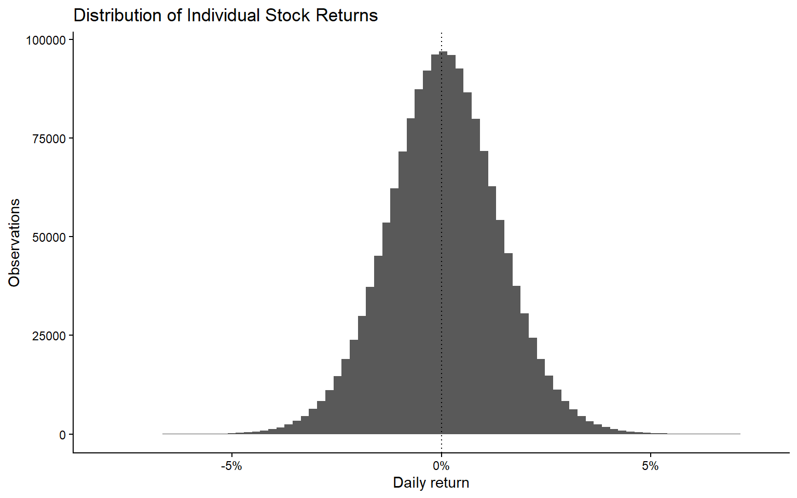
6.2.8 市場リターンの時系列
plot_market_return_series <- tbl_market |>
ggplot(aes(x = date, y = R_M)) +
geom_line(linewidth = 0.4) +
geom_hline(
yintercept = 0,
linetype = "dotted"
) +
scale_y_continuous(
labels = scales::label_percent()
) +
labs(
x = NULL,
y = "Market return",
title = "Daily Market Returns"
) +
theme_classic()
plot_market_return_series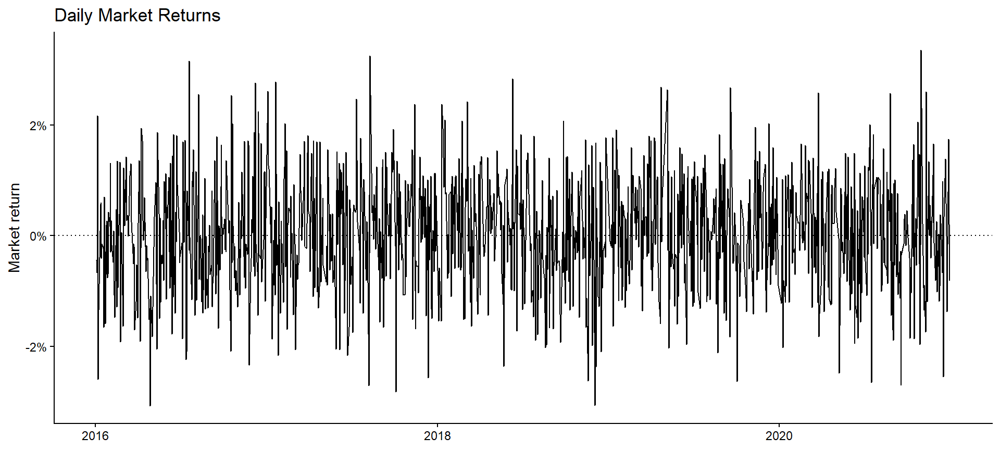
6.3 決算サプライズとイベント分類
6.3.1 決算サプライズ
決算サプライズは、実現利益と予想利益の差を期首時価総額で標準化して計算する。
\[ Surprise_i = \frac{ RealizedEarnings_i - ForecastEarnings_i }{ ME_{i,-1} } \]
正の値は実現利益が予想を上回ったことを、負の値は予想を下回ったことを表す。
tbl_event <- compute_earnings_surprise_LFL(
tbl_event = tbl_event,
number_of_groups = 5L
)
tbl_event |>
select(
event_ID,
firm_ID,
event_date,
event_year,
earnings_surprise,
event_strength
) |>
slice_head(n = 20)
#> # A tibble: 20 × 6
#> event_ID firm_ID event_date event_year earnings_surprise event_strength
#> <int> <int> <date> <dbl> <dbl> <ord>
#> 1 1 39 2017-01-04 2017 -0.0081327 1
#> 2 2 57 2017-01-04 2017 -0.010049 1
#> 3 3 73 2017-01-04 2017 -0.0020232 4
#> 4 4 109 2017-01-04 2017 -0.0043961 3
#> 5 5 111 2017-01-04 2017 -0.0044873 3
#> 6 6 231 2017-01-04 2017 -0.014399 1
#> 7 7 944 2017-01-04 2017 -0.0068979 2
#> 8 8 1227 2017-01-04 2017 -0.0011248 5
#> 9 9 422 2017-01-05 2017 -0.0048408 3
#> 10 10 1203 2017-01-05 2017 -0.00086568 5
#> 11 11 346 2017-01-06 2017 -0.0058582 2
#> 12 12 590 2017-01-06 2017 -0.010344 1
#> 13 13 644 2017-01-06 2017 -0.0064889 2
#> 14 14 1153 2017-01-06 2017 -0.0021003 4
#> 15 15 191 2017-01-10 2017 -0.0034658 4
#> 16 16 353 2017-01-10 2017 -0.010249 1
#> 17 17 566 2017-01-10 2017 -0.0043876 3
#> 18 18 322 2017-01-11 2017 -0.0046897 3
#> 19 19 1050 2017-01-11 2017 -0.0024991 4
#> 20 20 426 2017-01-12 2017 -0.0010089 56.3.2 イベント強度別の概要
tbl_event_strength_summary <- tbl_event |>
group_by(
event_year,
event_strength
) |>
summarise(
events = n(),
mean_surprise = mean(
earnings_surprise,
na.rm = TRUE
),
median_surprise = median(
earnings_surprise,
na.rm = TRUE
),
.groups = "drop"
) |>
arrange(
event_year,
event_strength
)
tbl_event_strength_summary
#> # A tibble: 20 × 5
#> event_year event_strength events mean_surprise median_surprise
#> <dbl> <ord> <int> <dbl> <dbl>
#> 1 2017 1 214 -0.010271 -0.0098319
#> 2 2017 2 214 -0.0064294 -0.0063866
#> 3 2017 3 214 -0.0044249 -0.0043693
#> 4 2017 4 213 -0.0028679 -0.0028917
#> 5 2017 5 213 -0.00062223 -0.00081805
#> 6 2018 1 263 -0.0099427 -0.0092589
#> 7 2018 2 263 -0.0066866 -0.0066374
#> 8 2018 3 263 -0.0048770 -0.0048670
#> 9 2018 4 263 -0.0031921 -0.0031796
#> 10 2018 5 263 -0.00098501 -0.0011702
#> 11 2019 1 262 -0.0098017 -0.0094002
#> 12 2019 2 262 -0.0064618 -0.0064241
#> 13 2019 3 261 -0.0045936 -0.0045890
#> 14 2019 4 261 -0.0029579 -0.0029594
#> 15 2019 5 261 -0.00088716 -0.0010823
#> 16 2020 1 54 -0.010749 -0.010333
#> 17 2020 2 54 -0.0065058 -0.0065211
#> 18 2020 3 54 -0.0043621 -0.0044412
#> 19 2020 4 54 -0.0026712 -0.0026349
#> 20 2020 5 54 -0.00051141 -0.000696266.3.3 決算サプライズの分布
plot_earnings_surprise_distribution <- tbl_event |>
filter(is.finite(earnings_surprise)) |>
ggplot(
aes(
x = earnings_surprise,
linetype = event_strength
)
) +
geom_density(linewidth = 0.8) +
geom_vline(
xintercept = 0,
linetype = "dotted"
) +
labs(
x = "Standardized earnings surprise",
y = "Density",
linetype = "Event strength",
title = "Distribution of Earnings Surprise"
) +
theme_classic()
plot_earnings_surprise_distribution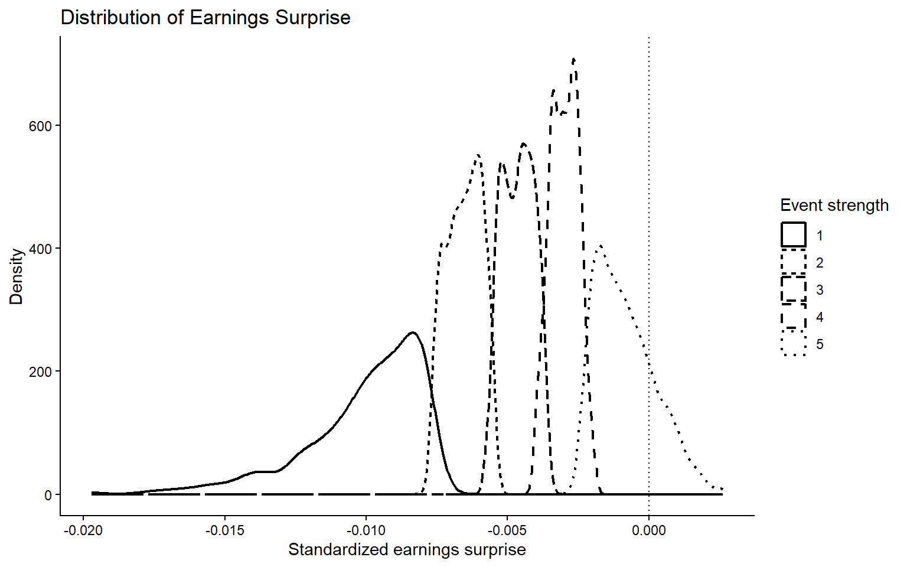
6.3.4 イベント強度別の箱ひげ図
plot_surprise_by_strength <- tbl_event |>
filter(is.finite(earnings_surprise)) |>
ggplot(
aes(
x = event_strength,
y = earnings_surprise
)
) +
geom_boxplot(
outlier.alpha = 0.25
) +
geom_hline(
yintercept = 0,
linetype = "dotted"
) +
labs(
x = "Event strength",
y = "Standardized earnings surprise",
title = "Earnings Surprise by Event-Strength Group"
) +
theme_classic()
plot_surprise_by_strength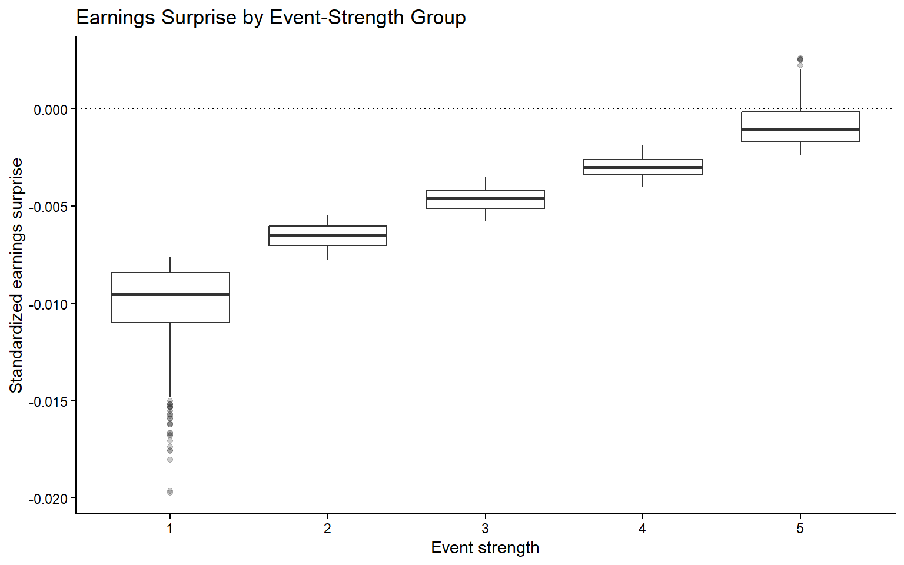
6.3.5 年度別イベント件数
plot_events_by_year <- tbl_event |>
count(
event_year,
event_strength,
name = "events"
) |>
ggplot(
aes(
x = factor(event_year),
y = events,
fill = event_strength
)
) +
geom_col(
position = "dodge"
) +
labs(
x = "Event year",
y = "Events",
fill = "Event strength",
title = "Number of Earnings Events by Year"
) +
theme_classic()
plot_events_by_year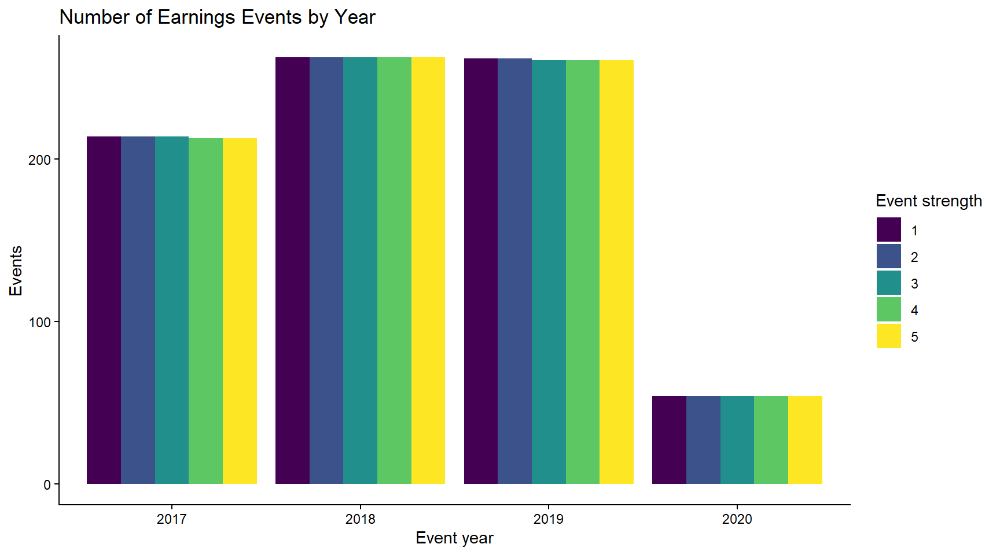
6.4 イベント日とイベント・パネル
6.4.1 取引日カレンダー
市場リターンの日付を取引日カレンダーとして使用する。
tbl_trading_calendar <- tbl_market |>
distinct(date) |>
arrange(date) |>
mutate(
date_ID = row_number()
) |>
select(
date_ID,
date
)
tbl_market_with_ID <- tbl_market |>
inner_join(
tbl_trading_calendar,
by = "date"
) |>
select(
date_ID,
date,
R_M
)
tbl_return_market <- tbl_return |>
inner_join(
tbl_market_with_ID,
by = "date"
) |>
select(
firm_ID,
date_ID,
R,
R_M
) |>
arrange(
firm_ID,
date_ID
)6.4.2 イベント日0
決算発表は取引終了後に行われると仮定する。そのため、発表日が取引日であっても、その次の取引日をイベント日0とする。
tbl_event <- assign_event_day_zero_LFL(
tbl_event = tbl_event,
tbl_trading_calendar = tbl_trading_calendar
)
tbl_event |>
select(
event_ID,
firm_ID,
event_date,
event_trade_date,
event_trade_date_ID,
event_strength,
earnings_surprise
) |>
slice_head(n = 20)
#> # A tibble: 20 × 7
#> event_ID firm_ID event_date event_trade_date event_trade_date_ID
#> <int> <int> <date> <date> <int>
#> 1 1 39 2017-01-04 2017-01-05 247
#> 2 2 57 2017-01-04 2017-01-05 247
#> 3 3 73 2017-01-04 2017-01-05 247
#> 4 4 109 2017-01-04 2017-01-05 247
#> 5 5 111 2017-01-04 2017-01-05 247
#> 6 6 231 2017-01-04 2017-01-05 247
#> 7 7 944 2017-01-04 2017-01-05 247
#> 8 8 1227 2017-01-04 2017-01-05 247
#> 9 9 422 2017-01-05 2017-01-06 248
#> 10 10 1203 2017-01-05 2017-01-06 248
#> 11 11 346 2017-01-06 2017-01-10 249
#> 12 12 590 2017-01-06 2017-01-10 249
#> 13 13 644 2017-01-06 2017-01-10 249
#> 14 14 1153 2017-01-06 2017-01-10 249
#> 15 15 191 2017-01-10 2017-01-11 250
#> 16 16 353 2017-01-10 2017-01-11 250
#> 17 17 566 2017-01-10 2017-01-11 250
#> 18 18 322 2017-01-11 2017-01-12 251
#> 19 19 1050 2017-01-11 2017-01-12 251
#> 20 20 426 2017-01-12 2017-01-13 252
#> event_strength earnings_surprise
#> <ord> <dbl>
#> 1 1 -0.0081327
#> 2 1 -0.010049
#> 3 4 -0.0020232
#> 4 3 -0.0043961
#> 5 3 -0.0044873
#> 6 1 -0.014399
#> 7 2 -0.0068979
#> 8 5 -0.0011248
#> 9 3 -0.0048408
#> 10 5 -0.00086568
#> 11 2 -0.0058582
#> 12 1 -0.010344
#> 13 2 -0.0064889
#> 14 4 -0.0021003
#> 15 4 -0.0034658
#> 16 1 -0.010249
#> 17 3 -0.0043876
#> 18 3 -0.0046897
#> 19 4 -0.0024991
#> 20 5 -0.00100896.4.3 発表日からイベント日0までの日数
tbl_event_gap <- tbl_event |>
mutate(
calendar_day_gap = as.integer(
event_trade_date - event_date
)
)
plot_event_date_gap <- tbl_event_gap |>
count(
calendar_day_gap,
name = "events"
) |>
ggplot(
aes(
x = factor(calendar_day_gap),
y = events
)
) +
geom_col() +
labs(
x = "Calendar days from announcement to event day 0",
y = "Events",
title = "Delay from Announcement Date to Event Day 0"
) +
theme_classic()
plot_event_date_gap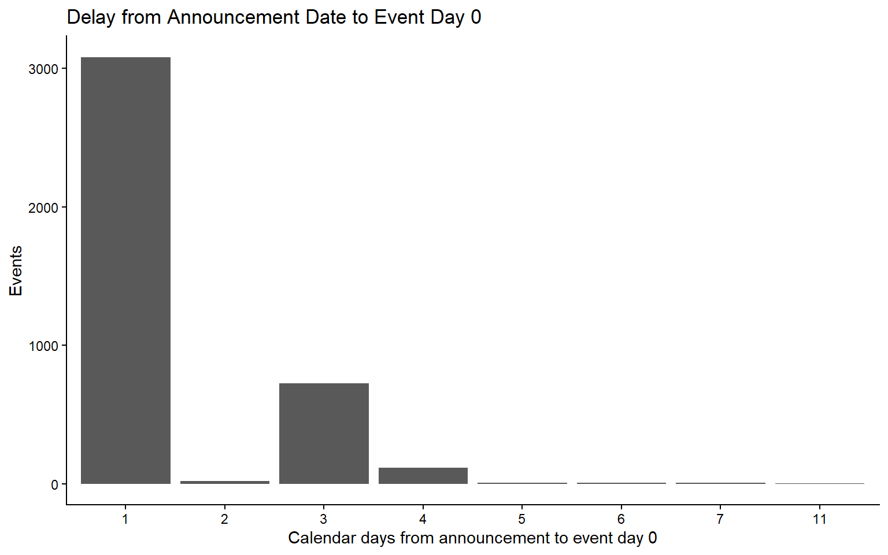
6.4.4 イベント・パネル
tbl_event_panel <- create_event_study_panel_LFL(
tbl_event = tbl_event,
tbl_trading_calendar = tbl_trading_calendar,
tbl_return_market = tbl_return_market,
estimation_start = estimation_start,
event_end = event_end
)
tbl_event_panel |>
select(
event_ID,
firm_ID,
relative_day,
date,
R,
R_M
) |>
slice_head(n = 20)
#> # A tibble: 20 × 6
#> event_ID firm_ID relative_day date R R_M
#> <int> <int> <int> <date> <dbl> <dbl>
#> 1 1 39 -130 2016-06-23 0.0098506 0.018087
#> 2 1 39 -129 2016-06-24 0.012580 0.0092862
#> 3 1 39 -128 2016-06-27 0.015076 0.0031098
#> 4 1 39 -127 2016-06-28 0.015788 0.00067260
#> 5 1 39 -126 2016-06-29 -0.0033987 -0.0048162
#> 6 1 39 -125 2016-06-30 -0.0071048 -0.0038061
#> 7 1 39 -124 2016-07-01 0.014684 -0.0032365
#> 8 1 39 -123 2016-07-04 -0.0069849 -0.0012511
#> 9 1 39 -122 2016-07-05 -0.023656 -0.018547
#> 10 1 39 -121 2016-07-06 0.011629 0.017017
#> 11 1 39 -120 2016-07-07 -0.0064901 -0.0011435
#> 12 1 39 -119 2016-07-08 -0.0062219 -0.0012174
#> 13 1 39 -118 2016-07-11 0.0055502 0.017228
#> 14 1 39 -117 2016-07-12 0.0064255 0.0060624
#> 15 1 39 -116 2016-07-13 -0.027040 -0.022380
#> 16 1 39 -115 2016-07-14 -0.014094 -0.020934
#> 17 1 39 -114 2016-07-15 0.0064607 0.0081064
#> 18 1 39 -113 2016-07-19 -0.010573 -0.0026187
#> 19 1 39 -112 2016-07-20 0.024173 0.031602
#> 20 1 39 -111 2016-07-21 -0.00044361 -0.000247926.4.5 データ利用可能性
estimation_window_length <-
estimation_end -
estimation_start + 1L
event_window_length <-
event_end -
event_start + 1L
tbl_event_coverage <- tbl_event_panel |>
group_by(
event_ID,
firm_ID,
event_strength
) |>
summarise(
valid_estimation_days = sum(
between(
relative_day,
estimation_start,
estimation_end
) &
is.finite(R) &
is.finite(R_M)
),
valid_event_days = sum(
between(
relative_day,
event_start,
event_end
) &
is.finite(R) &
is.finite(R_M)
),
.groups = "drop"
)
tbl_event_coverage |>
summarise(
events = n(),
complete_estimation_window = sum(
valid_estimation_days ==
estimation_window_length
),
usable_estimation_window = sum(
valid_estimation_days >=
minimum_estimation_observations
),
complete_event_window = sum(
valid_event_days ==
event_window_length
)
)
#> # A tibble: 1 × 4
#> events complete_estimation_window usable_estimation_window
#> <int> <int> <int>
#> 1 3960 3960 3960
#> complete_event_window
#> <int>
#> 1 39606.4.6 推定期間の利用可能日数
plot_estimation_coverage <- tbl_event_coverage |>
ggplot(
aes(
x = valid_estimation_days
)
) +
geom_histogram(
binwidth = 5,
boundary = 0
) +
geom_vline(
xintercept =
minimum_estimation_observations,
linetype = "dotted"
) +
labs(
x = "Valid estimation-window observations",
y = "Events",
title = "Estimation-Window Data Coverage"
) +
theme_classic()
plot_estimation_coverage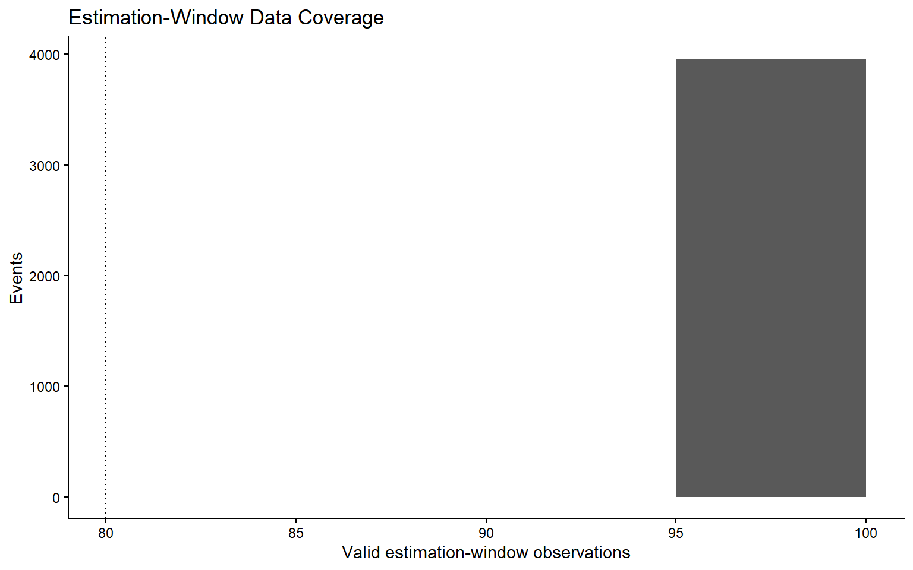
6.5 マーケット・モデルの推定
6.5.1 イベント別回帰
tbl_market_model <- estimate_market_models_LFL(
tbl_event_panel = tbl_event_panel,
estimation_start = estimation_start,
estimation_end = estimation_end,
minimum_observations =
minimum_estimation_observations
)
tbl_market_model |>
slice_head(n = 20)
#> # A tibble: 20 × 13
#> event_ID firm_ID event_date event_trade_date event_year event_strength
#> <int> <int> <date> <date> <dbl> <ord>
#> 1 1 39 2017-01-04 2017-01-05 2017 1
#> 2 2 57 2017-01-04 2017-01-05 2017 1
#> 3 3 73 2017-01-04 2017-01-05 2017 4
#> 4 4 109 2017-01-04 2017-01-05 2017 3
#> 5 5 111 2017-01-04 2017-01-05 2017 3
#> 6 6 231 2017-01-04 2017-01-05 2017 1
#> 7 7 944 2017-01-04 2017-01-05 2017 2
#> 8 8 1227 2017-01-04 2017-01-05 2017 5
#> 9 9 422 2017-01-05 2017-01-06 2017 3
#> 10 10 1203 2017-01-05 2017-01-06 2017 5
#> 11 11 346 2017-01-06 2017-01-10 2017 2
#> 12 12 590 2017-01-06 2017-01-10 2017 1
#> 13 13 644 2017-01-06 2017-01-10 2017 2
#> 14 14 1153 2017-01-06 2017-01-10 2017 4
#> 15 15 191 2017-01-10 2017-01-11 2017 4
#> 16 16 353 2017-01-10 2017-01-11 2017 1
#> 17 17 566 2017-01-10 2017-01-11 2017 3
#> 18 18 322 2017-01-11 2017-01-12 2017 3
#> 19 19 1050 2017-01-11 2017-01-12 2017 4
#> 20 20 426 2017-01-12 2017-01-13 2017 5
#> earnings_surprise alpha beta sigma_AR r_squared adjusted_r_squared
#> <dbl> <dbl> <dbl> <dbl> <dbl> <dbl>
#> 1 -0.0081327 -3.5923e-4 0.75040 0.0079236 0.51009 0.50509
#> 2 -0.010049 -2.3180e-4 1.3879 0.0079819 0.77826 0.77600
#> 3 -0.0020232 -7.9684e-4 1.2040 0.0080940 0.71979 0.71693
#> 4 -0.0043961 -6.2781e-5 1.0279 0.0079145 0.66194 0.65849
#> 5 -0.0044873 -2.7146e-4 1.0319 0.0081593 0.64996 0.64639
#> 6 -0.014399 6.9858e-4 1.2164 0.0078301 0.73696 0.73428
#> 7 -0.0068979 -9.3859e-4 1.2906 0.0078816 0.75685 0.75437
#> 8 -0.0011248 4.6660e-4 1.1543 0.0078297 0.71615 0.71326
#> 9 -0.0048408 -1.9959e-4 0.48469 0.0093315 0.23306 0.22523
#> 10 -0.00086568 -8.3396e-4 0.89616 0.0088518 0.53584 0.53111
#> 11 -0.0058582 6.9132e-4 0.60488 0.0084943 0.36168 0.35517
#> 12 -0.010344 2.3376e-3 1.1796 0.0070260 0.75900 0.75654
#> 13 -0.0064889 4.3520e-4 1.1550 0.0075195 0.72499 0.72219
#> 14 -0.0021003 -4.3792e-5 0.96253 0.0085477 0.58624 0.58202
#> 15 -0.0034658 -2.6240e-3 0.59313 0.0078355 0.39675 0.39060
#> 16 -0.010249 6.5290e-7 1.0088 0.0082464 0.63202 0.62826
#> 17 -0.0043876 4.9855e-4 0.91843 0.0083511 0.58128 0.57701
#> 18 -0.0046897 5.8502e-4 0.90935 0.0076618 0.62317 0.61932
#> 19 -0.0024991 4.2531e-4 1.1475 0.0080806 0.70304 0.70001
#> 20 -0.0010089 -1.0163e-3 0.91607 0.0082056 0.60440 0.60036
#> estimation_observations
#> <int>
#> 1 100
#> 2 100
#> 3 100
#> 4 100
#> 5 100
#> 6 100
#> 7 100
#> 8 100
#> 9 100
#> 10 100
#> 11 100
#> 12 100
#> 13 100
#> 14 100
#> 15 100
#> 16 100
#> 17 100
#> 18 100
#> 19 100
#> 20 1006.5.2 推定結果の概要
tbl_market_model_summary <- tbl_market_model |>
summarise(
estimated_events = n(),
mean_alpha = mean(alpha),
mean_beta = mean(beta),
median_beta = median(beta),
minimum_beta = min(beta),
maximum_beta = max(beta),
mean_r_squared = mean(r_squared),
median_r_squared = median(r_squared),
mean_sigma_AR = mean(sigma_AR),
minimum_observations =
min(estimation_observations),
maximum_observations =
max(estimation_observations)
)
tbl_market_model_summary
#> # A tibble: 1 × 11
#> estimated_events mean_alpha mean_beta median_beta minimum_beta maximum_beta
#> <int> <dbl> <dbl> <dbl> <dbl> <dbl>
#> 1 3960 -0.000017343 0.99751 1.0048 -0.0083393 2.1776
#> mean_r_squared median_r_squared mean_sigma_AR minimum_observations
#> <dbl> <dbl> <dbl> <int>
#> 1 0.59659 0.62721 0.0079758 100
#> maximum_observations
#> <int>
#> 1 1006.5.3 ベータの分布
plot_market_beta <- tbl_market_model |>
ggplot(aes(x = beta)) +
geom_histogram(bins = 40) +
geom_vline(
xintercept = 1,
linetype = "dotted"
) +
labs(
x = "Market beta",
y = "Events",
title = "Distribution of Event-Specific Market Betas"
) +
theme_classic()
plot_market_beta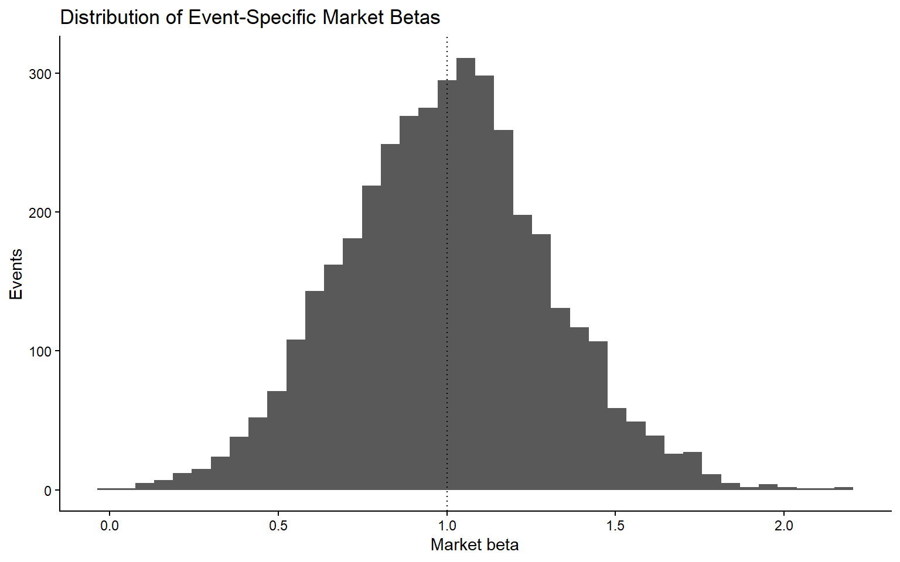
6.5.4 アルファの分布
plot_market_alpha <- tbl_market_model |>
ggplot(aes(x = alpha)) +
geom_histogram(bins = 40) +
geom_vline(
xintercept = 0,
linetype = "dotted"
) +
scale_x_continuous(
labels = scales::label_percent()
) +
labs(
x = "Market-model alpha",
y = "Events",
title = "Distribution of Event-Specific Alphas"
) +
theme_classic()
plot_market_alpha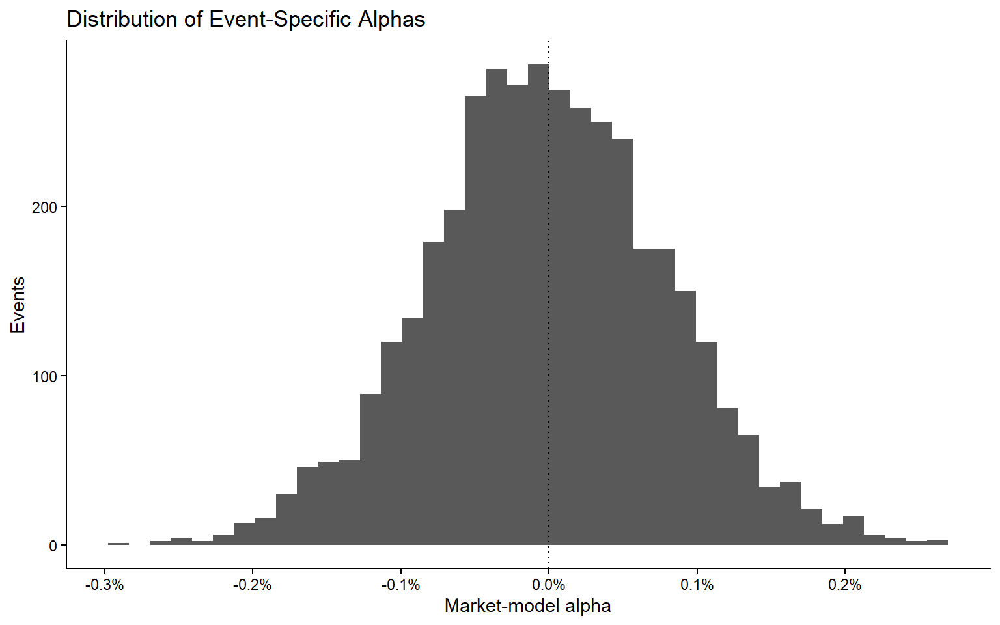
6.5.5 決定係数の分布
plot_market_model_r_squared <- tbl_market_model |>
ggplot(aes(x = r_squared)) +
geom_histogram(bins = 40) +
labs(
x = "R-squared",
y = "Events",
title = "Goodness of Fit of Event-Specific Market Models"
) +
theme_classic()
plot_market_model_r_squared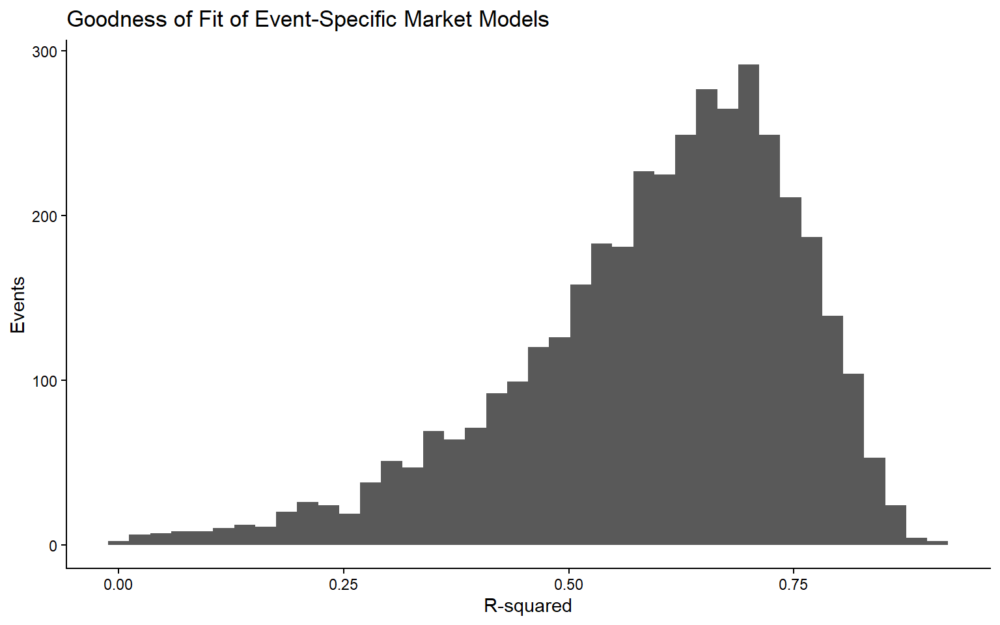
6.5.6 ベータと決定係数
plot_beta_r_squared <- tbl_market_model |>
ggplot(
aes(
x = beta,
y = r_squared,
shape = event_strength
)
) +
geom_point(alpha = 0.55) +
geom_vline(
xintercept = 1,
linetype = "dotted"
) +
labs(
x = "Market beta",
y = "R-squared",
shape = "Event strength",
title = "Market Beta and Model Fit"
) +
theme_classic()
plot_beta_r_squared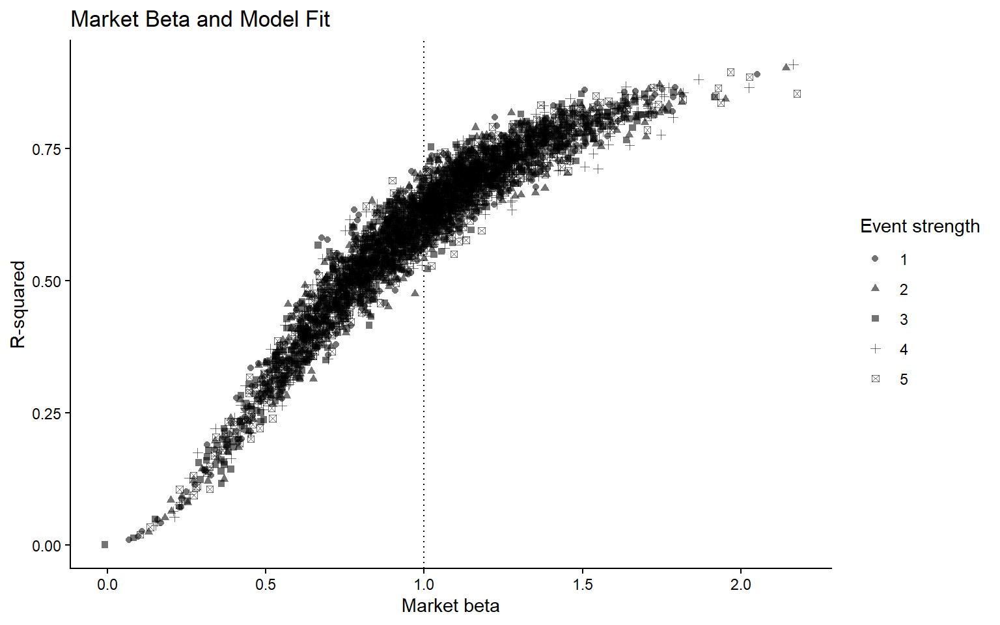
6.6 異常リターンと累積異常リターン
6.6.1 ARとCAR
tbl_abnormal_return <- compute_abnormal_returns_LFL(
tbl_event_panel = tbl_event_panel,
tbl_market_model = tbl_market_model,
event_start = event_start,
event_end = event_end,
require_complete_window = TRUE
)
tbl_abnormal_return |>
select(
event_ID,
firm_ID,
event_strength,
relative_day,
date,
R,
R_M,
normal_return,
AR,
CAR
) |>
slice_head(n = 20)
#> # A tibble: 20 × 10
#> event_ID firm_ID event_strength relative_day date R
#> <int> <int> <ord> <int> <date> <dbl>
#> 1 1 39 1 -30 2016-11-18 -0.0013155
#> 2 1 39 1 -29 2016-11-21 0.0037198
#> 3 1 39 1 -28 2016-11-22 0.021021
#> 4 1 39 1 -27 2016-11-24 0.0030893
#> 5 1 39 1 -26 2016-11-25 -0.0062645
#> 6 1 39 1 -25 2016-11-28 -0.0040561
#> 7 1 39 1 -24 2016-11-29 0.012325
#> 8 1 39 1 -23 2016-11-30 -0.0096488
#> 9 1 39 1 -22 2016-12-01 0.014048
#> 10 1 39 1 -21 2016-12-02 0.012192
#> 11 1 39 1 -20 2016-12-05 0.0097831
#> 12 1 39 1 -19 2016-12-06 0.026133
#> 13 1 39 1 -18 2016-12-07 -0.0044072
#> 14 1 39 1 -17 2016-12-08 0.015023
#> 15 1 39 1 -16 2016-12-09 0.0074484
#> 16 1 39 1 -15 2016-12-12 0.011444
#> 17 1 39 1 -14 2016-12-13 -0.011043
#> 18 1 39 1 -13 2016-12-14 0.019488
#> 19 1 39 1 -12 2016-12-15 0.0054953
#> 20 1 39 1 -11 2016-12-16 -0.0066719
#> R_M normal_return AR CAR
#> <dbl> <dbl> <dbl> <dbl>
#> 1 -0.0014725 -0.0014642 0.00014876 0.00014876
#> 2 -0.0033404 -0.0028659 0.0065857 0.0067344
#> 3 0.017138 0.012501 0.0085199 0.015254
#> 4 0.015701 0.011423 -0.0083334 0.0069209
#> 5 -0.023346 -0.017878 0.011614 0.018535
#> 6 -0.0065350 -0.0052632 0.0012071 0.019742
#> 7 -0.0041437 -0.0034686 0.015794 0.035536
#> 8 0.0029259 0.0018364 -0.011485 0.024050
#> 9 0.00047329 -0.0000040664 0.014052 0.038102
#> 10 0.010758 0.0077138 0.0044779 0.042580
#> 11 -0.0054821 -0.0044730 0.014256 0.056836
#> 12 0.018634 0.013624 0.012509 0.069345
#> 13 -0.0073350 -0.0058634 0.0014562 0.070801
#> 14 0.027649 0.020389 -0.0053659 0.065435
#> 15 -0.0014362 -0.0014370 0.0088854 0.074321
#> 16 -0.0064222 -0.0051784 0.016623 0.090943
#> 17 -0.014330 -0.011113 0.000069896 0.091013
#> 18 0.022428 0.016471 0.0030171 0.094030
#> 19 0.018578 0.013581 -0.0080862 0.085944
#> 20 -0.0034403 -0.0029408 -0.0037311 0.0822136.6.2 AARとCAAR
イベント強度 \(g\) に属するイベント数を \(N_g\) とすると、平均異常リターンは次式で表される。
\[ AAR_{g,t} = \frac{1}{N_g} \sum_{i \in g} AR_{i,t} \]
平均累積異常リターンは次式で表される。
\[ CAAR_{g,t} = \frac{1}{N_g} \sum_{i \in g} CAR_{i,t} \]
significance_stars <- function(p_value) {
case_when(
is.na(p_value) ~ "",
p_value < 0.01 ~ "***",
p_value < 0.05 ~ "**",
p_value < 0.10 ~ "*",
TRUE ~ ""
)
}tbl_daily_statistics <- tbl_abnormal_return |>
group_by(
relative_day,
event_strength
) |>
summarise(
events = n_distinct(event_ID),
AAR = mean(AR),
CAAR = mean(CAR),
standard_deviation_AR = sd(AR),
standard_deviation_CAR = sd(CAR),
.groups = "drop"
) |>
mutate(
standard_error_AAR =
standard_deviation_AR /
sqrt(events),
standard_error_CAAR =
standard_deviation_CAR /
sqrt(events),
t_AAR = if_else(
is.finite(standard_error_AAR) &
standard_error_AAR > 0,
AAR / standard_error_AAR,
NA_real_
),
t_CAAR = if_else(
is.finite(standard_error_CAAR) &
standard_error_CAAR > 0,
CAAR / standard_error_CAAR,
NA_real_
),
p_AAR = if_else(
is.finite(t_AAR),
2 * pt(
-abs(t_AAR),
df = events - 1L
),
NA_real_
),
p_CAAR = if_else(
is.finite(t_CAAR),
2 * pt(
-abs(t_CAAR),
df = events - 1L
),
NA_real_
),
significance_AAR =
significance_stars(p_AAR),
significance_CAAR =
significance_stars(p_CAAR)
) |>
arrange(
event_strength,
relative_day
)
tbl_daily_statistics
#> # A tibble: 305 × 15
#> relative_day event_strength events AAR CAAR
#> <int> <ord> <int> <dbl> <dbl>
#> 1 -30 1 793 -0.00033279 -0.00033279
#> 2 -29 1 793 0.00034601 0.000013216
#> 3 -28 1 793 -0.000030469 -0.000017253
#> 4 -27 1 793 0.00024231 0.00022506
#> 5 -26 1 793 0.00042018 0.00064524
#> 6 -25 1 793 0.00020818 0.00085342
#> 7 -24 1 793 0.00053366 0.0013871
#> 8 -23 1 793 -0.000028460 0.0013586
#> 9 -22 1 793 -0.00014238 0.0012162
#> 10 -21 1 793 -0.00019155 0.0010247
#> standard_deviation_AR standard_deviation_CAR standard_error_AAR
#> <dbl> <dbl> <dbl>
#> 1 0.0079974 0.0079974 0.00028400
#> 2 0.0081183 0.011119 0.00028829
#> 3 0.0076763 0.013469 0.00027259
#> 4 0.0079520 0.015165 0.00028238
#> 5 0.0082483 0.017336 0.00029291
#> 6 0.0080764 0.019248 0.00028680
#> 7 0.0080576 0.020949 0.00028613
#> 8 0.0081628 0.022817 0.00028987
#> 9 0.0079747 0.024791 0.00028319
#> 10 0.0083095 0.026730 0.00029508
#> standard_error_CAAR t_AAR t_CAAR p_AAR p_CAAR significance_AAR
#> <dbl> <dbl> <dbl> <dbl> <dbl> <chr>
#> 1 0.00028400 -1.1718 -1.1718 0.24163 0.24163 ""
#> 2 0.00039484 1.2002 0.033472 0.23042 0.97331 ""
#> 3 0.00047829 -0.11178 -0.036072 0.91103 0.97123 ""
#> 4 0.00053853 0.85808 0.41790 0.39111 0.67613 ""
#> 5 0.00061562 1.4345 1.0481 0.15181 0.29490 ""
#> 6 0.00068350 0.72588 1.2486 0.46812 0.21218 ""
#> 7 0.00074393 1.8651 1.8645 0.062543 0.062617 "*"
#> 8 0.00081025 -0.098181 1.6768 0.92181 0.093980 ""
#> 9 0.00088037 -0.50277 1.3815 0.61526 0.16751 ""
#> 10 0.00094920 -0.64913 1.0795 0.51644 0.28068 ""
#> significance_CAAR
#> <chr>
#> 1 ""
#> 2 ""
#> 3 ""
#> 4 ""
#> 5 ""
#> 6 ""
#> 7 "*"
#> 8 "*"
#> 9 ""
#> 10 ""
#> # ℹ 295 more rows6.6.3 イベント強度別CAAR
plot_caar_by_strength <- tbl_daily_statistics |>
ggplot(
aes(
x = relative_day,
y = CAAR,
linetype = event_strength
)
) +
annotate(
"rect",
xmin = -1,
xmax = 1,
ymin = -Inf,
ymax = Inf,
alpha = 0.08
) +
geom_line(linewidth = 0.9) +
geom_hline(
yintercept = 0,
linetype = "dotted"
) +
geom_vline(
xintercept = 0,
linetype = "dotted"
) +
scale_y_continuous(
labels = scales::label_percent()
) +
labs(
x = "Relative trading day",
y = "CAAR",
linetype = "Event strength",
title = "CAAR by Earnings-Surprise Group"
) +
theme_classic()
plot_caar_by_strength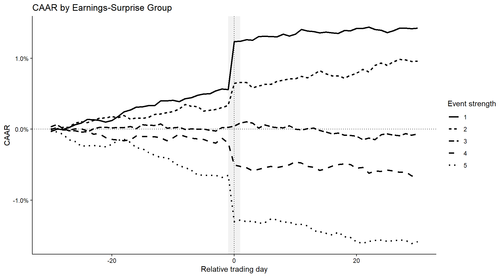
6.6.4 イベント日前後のAAR
plot_aar_around_event <- tbl_daily_statistics |>
filter(
between(
relative_day,
-10L,
10L
)
) |>
ggplot(
aes(
x = relative_day,
y = AAR,
linetype = event_strength
)
) +
geom_line(linewidth = 0.8) +
geom_point() +
geom_vline(
xintercept = 0,
linetype = "dotted"
) +
geom_hline(
yintercept = 0,
linetype = "dotted"
) +
scale_x_continuous(
breaks = seq(-10, 10, 2)
) +
scale_y_continuous(
labels = scales::label_percent()
) +
labs(
x = "Relative trading day",
y = "AAR",
linetype = "Event strength",
title = "Average Abnormal Returns around the Event"
) +
theme_classic()
plot_aar_around_event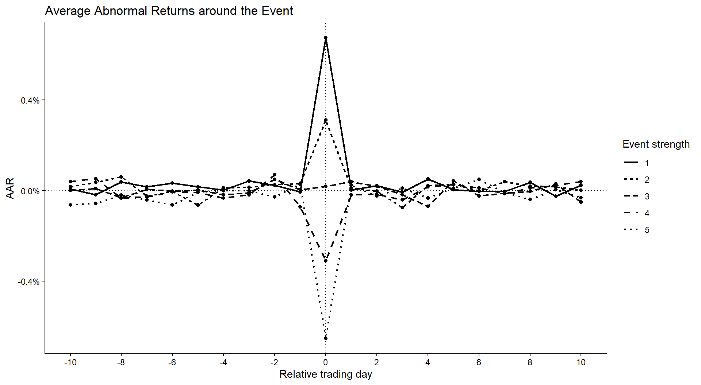
6.6.5 イベント日0のAAR
plot_event_day_aar <- tbl_daily_statistics |>
filter(relative_day == 0L) |>
ggplot(
aes(
x = event_strength,
y = AAR
)
) +
geom_col() +
geom_hline(
yintercept = 0,
linetype = "dotted"
) +
scale_y_continuous(
labels = scales::label_percent()
) +
labs(
x = "Event strength",
y = "Event-day AAR",
title = "Abnormal Return on Event Day 0"
) +
theme_classic()
plot_event_day_aar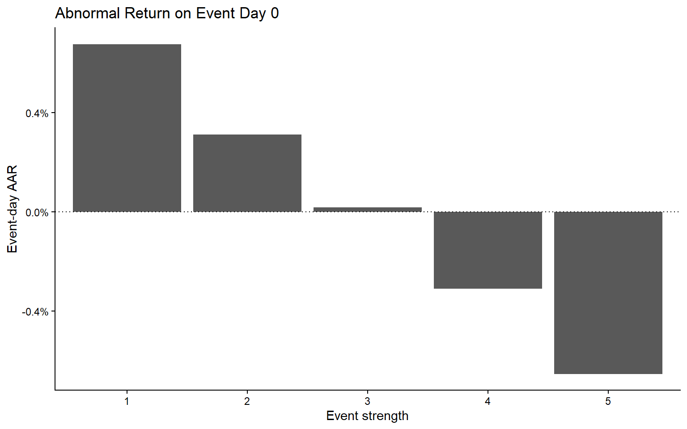
6.6.6 イベント日後のCAAR
plot_post_event_caar <- tbl_daily_statistics |>
filter(
between(
relative_day,
0L,
30L
)
) |>
ggplot(
aes(
x = relative_day,
y = CAAR,
linetype = event_strength
)
) +
geom_line(linewidth = 0.9) +
geom_hline(
yintercept = 0,
linetype = "dotted"
) +
scale_y_continuous(
labels = scales::label_percent()
) +
labs(
x = "Trading days after event",
y = "CAAR",
linetype = "Event strength",
title = "Post-Event Cumulative Abnormal Returns"
) +
theme_classic()
plot_post_event_caar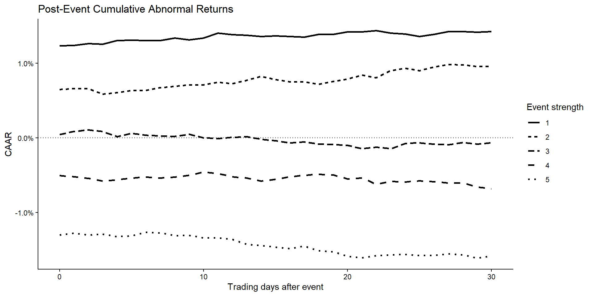
6.6.7 イベント強度別AR分布
plot_ar_distribution_by_strength <- tbl_abnormal_return |>
filter(
between(
relative_day,
-1L,
1L
)
) |>
ggplot(
aes(
x = AR,
linetype = event_strength
)
) +
geom_density(linewidth = 0.8) +
geom_vline(
xintercept = 0,
linetype = "dotted"
) +
scale_x_continuous(
labels = scales::label_percent()
) +
labs(
x = "Abnormal return",
y = "Density",
linetype = "Event strength",
title = "Distribution of Abnormal Returns in [-1, +1]"
) +
theme_classic()
plot_ar_distribution_by_strength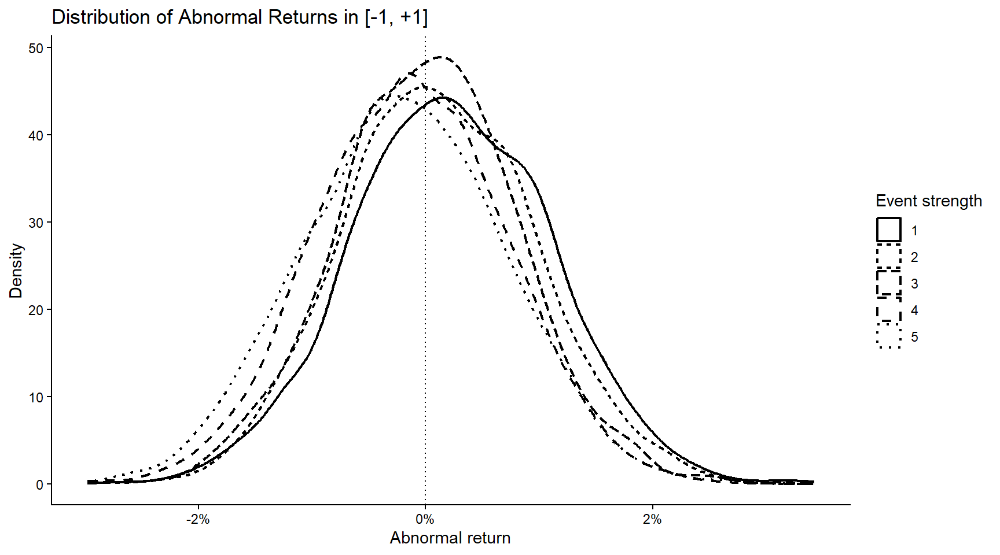
6.7 イベント・ウィンドウ分析
6.7.1 ウィンドウ定義
tbl_summary_window <- tribble(
~window_ID, ~window_label, ~start_day, ~end_day,
"m1_p1", "[-1, +1]", -1L, 1L,
"0_p1", "[0, +1]", 0L, 1L,
"m5_p5", "[-5, +5]", -5L, 5L,
"m10_p10", "[-10, +10]", -10L, 10L,
"m30_p30", "[-30, +30]", -30L, 30L
)
tbl_summary_window
#> # A tibble: 5 × 4
#> window_ID window_label start_day end_day
#> <chr> <chr> <int> <int>
#> 1 m1_p1 [-1, +1] -1 1
#> 2 0_p1 [0, +1] 0 1
#> 3 m5_p5 [-5, +5] -5 5
#> 4 m10_p10 [-10, +10] -10 10
#> 5 m30_p30 [-30, +30] -30 306.7.2 イベント別CAR
tbl_event_window_return <-
compute_event_window_returns_LFL(
tbl_abnormal_return = tbl_abnormal_return,
tbl_window = tbl_summary_window
)
tbl_event_window_return |>
slice_head(n = 20)
#> # A tibble: 20 × 14
#> event_ID firm_ID event_date event_trade_date event_year event_strength
#> <int> <int> <date> <date> <dbl> <ord>
#> 1 1 39 2017-01-04 2017-01-05 2017 1
#> 2 2 57 2017-01-04 2017-01-05 2017 1
#> 3 3 73 2017-01-04 2017-01-05 2017 4
#> 4 4 109 2017-01-04 2017-01-05 2017 3
#> 5 5 111 2017-01-04 2017-01-05 2017 3
#> 6 6 231 2017-01-04 2017-01-05 2017 1
#> 7 7 944 2017-01-04 2017-01-05 2017 2
#> 8 8 1227 2017-01-04 2017-01-05 2017 5
#> 9 9 422 2017-01-05 2017-01-06 2017 3
#> 10 10 1203 2017-01-05 2017-01-06 2017 5
#> 11 11 346 2017-01-06 2017-01-10 2017 2
#> 12 12 590 2017-01-06 2017-01-10 2017 1
#> 13 13 644 2017-01-06 2017-01-10 2017 2
#> 14 14 1153 2017-01-06 2017-01-10 2017 4
#> 15 15 191 2017-01-10 2017-01-11 2017 4
#> 16 16 353 2017-01-10 2017-01-11 2017 1
#> 17 17 566 2017-01-10 2017-01-11 2017 3
#> 18 18 322 2017-01-11 2017-01-12 2017 3
#> 19 19 1050 2017-01-11 2017-01-12 2017 4
#> 20 20 426 2017-01-12 2017-01-13 2017 5
#> earnings_surprise window_ID window_label start_day end_day expected_days
#> <dbl> <chr> <chr> <int> <int> <int>
#> 1 -0.0081327 0_p1 [0, +1] 0 1 2
#> 2 -0.010049 0_p1 [0, +1] 0 1 2
#> 3 -0.0020232 0_p1 [0, +1] 0 1 2
#> 4 -0.0043961 0_p1 [0, +1] 0 1 2
#> 5 -0.0044873 0_p1 [0, +1] 0 1 2
#> 6 -0.014399 0_p1 [0, +1] 0 1 2
#> 7 -0.0068979 0_p1 [0, +1] 0 1 2
#> 8 -0.0011248 0_p1 [0, +1] 0 1 2
#> 9 -0.0048408 0_p1 [0, +1] 0 1 2
#> 10 -0.00086568 0_p1 [0, +1] 0 1 2
#> 11 -0.0058582 0_p1 [0, +1] 0 1 2
#> 12 -0.010344 0_p1 [0, +1] 0 1 2
#> 13 -0.0064889 0_p1 [0, +1] 0 1 2
#> 14 -0.0021003 0_p1 [0, +1] 0 1 2
#> 15 -0.0034658 0_p1 [0, +1] 0 1 2
#> 16 -0.010249 0_p1 [0, +1] 0 1 2
#> 17 -0.0043876 0_p1 [0, +1] 0 1 2
#> 18 -0.0046897 0_p1 [0, +1] 0 1 2
#> 19 -0.0024991 0_p1 [0, +1] 0 1 2
#> 20 -0.0010089 0_p1 [0, +1] 0 1 2
#> CAR_window observed_days
#> <dbl> <int>
#> 1 -0.0065537 2
#> 2 -0.0015993 2
#> 3 -0.0081648 2
#> 4 0.00033339 2
#> 5 -0.0011367 2
#> 6 0.034678 2
#> 7 0.0043073 2
#> 8 -0.015256 2
#> 9 -0.011574 2
#> 10 0.0037716 2
#> 11 0.023263 2
#> 12 0.019180 2
#> 13 -0.00048559 2
#> 14 0.000067580 2
#> 15 0.013548 2
#> 16 0.0086222 2
#> 17 -0.016704 2
#> 18 -0.011378 2
#> 19 -0.013969 2
#> 20 -0.0089423 26.7.3 イベント強度別の平均CAR
tbl_event_window_summary <- tbl_event_window_return |>
group_by(
window_ID,
window_label,
start_day,
end_day,
event_strength
) |>
summarise(
events = n_distinct(event_ID),
mean_CAR = mean(CAR_window),
median_CAR = median(CAR_window),
standard_deviation_CAR =
sd(CAR_window),
positive_CAR_ratio =
mean(CAR_window > 0),
.groups = "drop"
) |>
mutate(
standard_error_CAR =
standard_deviation_CAR /
sqrt(events),
t_value = if_else(
is.finite(standard_error_CAR) &
standard_error_CAR > 0,
mean_CAR /
standard_error_CAR,
NA_real_
),
p_value = if_else(
is.finite(t_value),
2 * pt(
-abs(t_value),
df = events - 1L
),
NA_real_
),
significance =
significance_stars(p_value)
) |>
arrange(
window_ID,
event_strength
)
tbl_event_window_summary
#> # A tibble: 25 × 14
#> window_ID window_label start_day end_day event_strength events mean_CAR
#> <chr> <chr> <int> <int> <ord> <int> <dbl>
#> 1 0_p1 [0, +1] 0 1 1 793 0.0067977
#> 2 0_p1 [0, +1] 0 1 2 793 0.0032266
#> 3 0_p1 [0, +1] 0 1 3 792 0.00057929
#> 4 0_p1 [0, +1] 0 1 4 791 -0.0032795
#> 5 0_p1 [0, +1] 0 1 5 791 -0.0062931
#> 6 m10_p10 [-10, +10] -10 10 1 793 0.0093638
#> 7 m10_p10 [-10, +10] -10 10 2 793 0.0047579
#> 8 m10_p10 [-10, +10] -10 10 3 792 -0.00017347
#> 9 m10_p10 [-10, +10] -10 10 4 791 -0.0030068
#> 10 m10_p10 [-10, +10] -10 10 5 791 -0.0094161
#> median_CAR standard_deviation_CAR positive_CAR_ratio standard_error_CAR
#> <dbl> <dbl> <dbl> <dbl>
#> 1 0.0070450 0.011741 0.72383 0.00041695
#> 2 0.0037860 0.011942 0.60025 0.00042406
#> 3 0.00060199 0.011135 0.52146 0.00039566
#> 4 -0.0030695 0.011171 0.39064 0.00039718
#> 5 -0.0060704 0.011668 0.29709 0.00041485
#> 6 0.0086618 0.040511 0.59016 0.0014386
#> 7 0.0049804 0.042086 0.55485 0.0014945
#> 8 0.00040740 0.040214 0.50758 0.0014289
#> 9 -0.0031404 0.039484 0.47914 0.0014039
#> 10 -0.011686 0.039978 0.39697 0.0014215
#> t_value p_value significance
#> <dbl> <dbl> <chr>
#> 1 16.303 9.6026e-52 "***"
#> 2 7.6087 7.8622e-14 "***"
#> 3 1.4641 1.4356e- 1 ""
#> 4 -8.2568 6.2656e-16 "***"
#> 5 -15.170 8.3233e-46 "***"
#> 6 6.5091 1.3410e-10 "***"
#> 7 3.1836 1.5114e- 3 "***"
#> 8 -0.12140 9.0341e- 1 ""
#> 9 -2.1417 3.2520e- 2 "**"
#> 10 -6.6243 6.4515e-11 "***"
#> # ℹ 15 more rows6.7.4 短期CARの分布
plot_short_window_car <- tbl_event_window_return |>
filter(window_ID == "m1_p1") |>
ggplot(
aes(
x = event_strength,
y = CAR_window
)
) +
geom_boxplot(
outlier.alpha = 0.25
) +
geom_hline(
yintercept = 0,
linetype = "dotted"
) +
scale_y_continuous(
labels = scales::label_percent()
) +
labs(
x = "Event strength",
y = "CAR [-1, +1]",
title = "Short-Window CAR by Earnings Surprise"
) +
theme_classic()
plot_short_window_car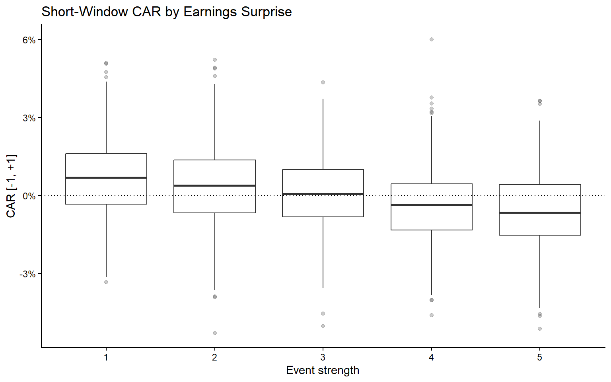
6.7.5 ウィンドウ別平均CAR
plot_window_mean_car <- tbl_event_window_summary |>
ggplot(
aes(
x = event_strength,
y = mean_CAR,
fill = window_label
)
) +
geom_col(
position = "dodge"
) +
geom_hline(
yintercept = 0,
linetype = "dotted"
) +
scale_y_continuous(
labels = scales::label_percent()
) +
labs(
x = "Event strength",
y = "Mean CAR",
fill = "Window",
title = "Mean CAR across Event Windows"
) +
theme_classic()
plot_window_mean_car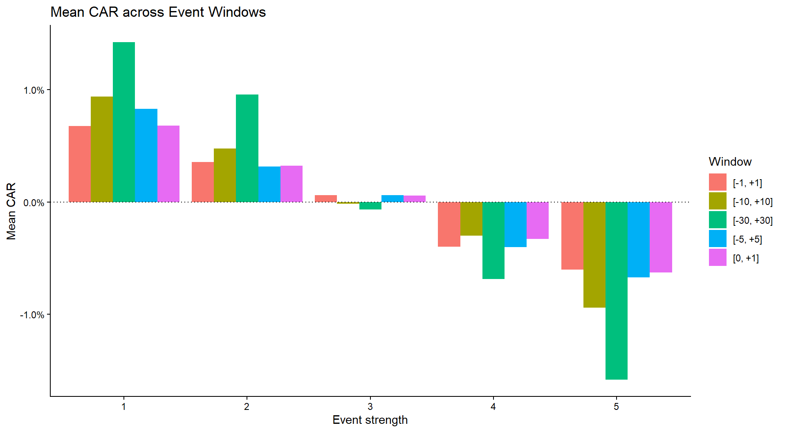
6.7.6 正のCARとなったイベントの割合
plot_positive_car_ratio <- tbl_event_window_summary |>
ggplot(
aes(
x = event_strength,
y = positive_CAR_ratio,
fill = window_label
)
) +
geom_col(
position = "dodge"
) +
geom_hline(
yintercept = 0.5,
linetype = "dotted"
) +
scale_y_continuous(
labels = scales::label_percent(),
limits = c(0, 1)
) +
labs(
x = "Event strength",
y = "Positive CAR ratio",
fill = "Window",
title = "Share of Events with Positive CAR"
) +
theme_classic()
plot_positive_car_ratio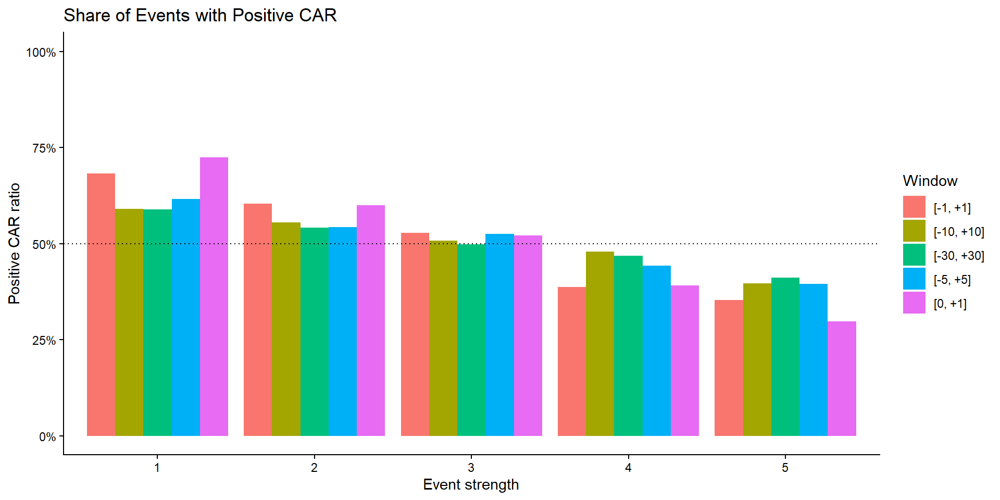
6.7.7 平均CARのヒートマップ
plot_window_car_heatmap <- tbl_event_window_summary |>
ggplot(
aes(
x = event_strength,
y = window_label,
fill = mean_CAR
)
) +
geom_tile() +
geom_text(
aes(
label = scales::percent(
mean_CAR,
accuracy = 0.1
)
)
) +
labs(
x = "Event strength",
y = "Event window",
fill = "Mean CAR",
title = "Mean CAR by Event Strength and Event Window"
) +
theme_classic()
plot_window_car_heatmap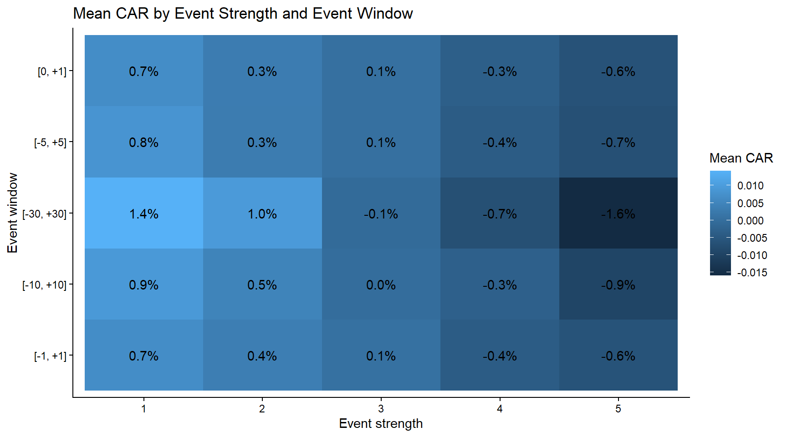
6.8 決算サプライズと短期CAR
6.8.1 回帰分析
tbl_surprise_regression <- tbl_event_window_return |>
filter(
window_ID == "m1_p1",
is.finite(earnings_surprise),
is.finite(CAR_window)
)
model_surprise_car <- lm(
CAR_window ~ earnings_surprise,
data = tbl_surprise_regression
)
broom::tidy(model_surprise_car)
#> # A tibble: 2 × 5
#> term estimate std.error statistic p.value
#> <chr> <dbl> <dbl> <dbl> <dbl>
#> 1 (Intercept) -0.0066774 0.00041568 -16.064 2.6646e-56
#> 2 earnings_surprise -1.3714 0.069096 -19.848 1.1933e-83
broom::glance(model_surprise_car)
#> # A tibble: 1 × 12
#> r.squared adj.r.squared sigma statistic p.value df logLik AIC
#> <dbl> <dbl> <dbl> <dbl> <dbl> <dbl> <dbl> <dbl>
#> 1 0.090519 0.090289 0.014511 393.93 1.1933e-83 1 11144. -22282.
#> BIC deviance df.residual nobs
#> <dbl> <dbl> <int> <int>
#> 1 -22263. 0.83344 3958 39606.8.2 決算サプライズと短期CAR
plot_surprise_car <- tbl_surprise_regression |>
ggplot(
aes(
x = earnings_surprise,
y = CAR_window,
shape = event_strength
)
) +
geom_point(alpha = 0.45) +
geom_smooth(
method = "lm",
se = TRUE
) +
geom_hline(
yintercept = 0,
linetype = "dotted"
) +
scale_y_continuous(
labels = scales::label_percent()
) +
labs(
x = "Standardized earnings surprise",
y = "CAR [-1, +1]",
shape = "Event strength",
title = "Earnings Surprise and Short-Window CAR"
) +
theme_classic()
plot_surprise_car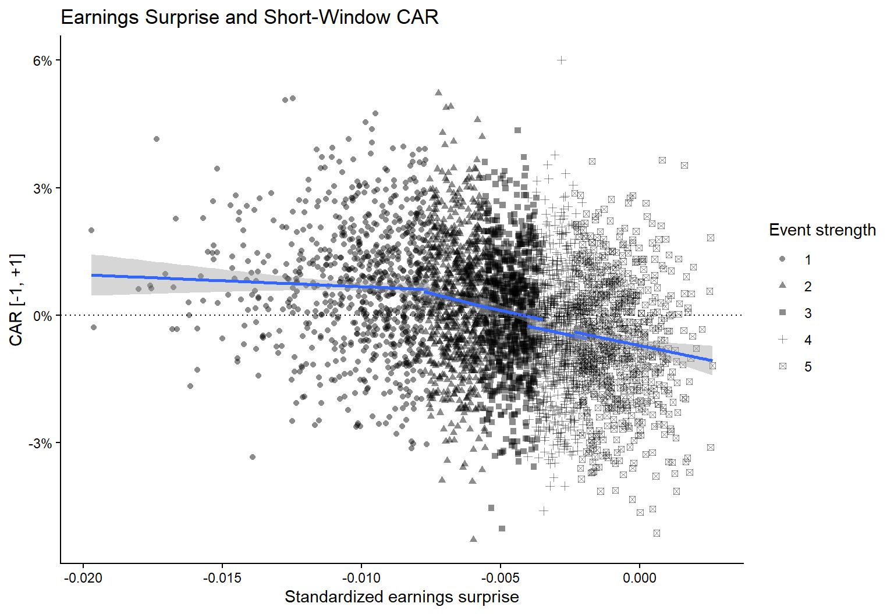
6.8.3 年度別の関係
plot_surprise_car_by_year <- tbl_surprise_regression |>
ggplot(
aes(
x = earnings_surprise,
y = CAR_window
)
) +
geom_point(alpha = 0.35) +
geom_smooth(
method = "lm",
se = FALSE
) +
facet_wrap(
vars(event_year),
scales = "free_x"
) +
geom_hline(
yintercept = 0,
linetype = "dotted"
) +
scale_y_continuous(
labels = scales::label_percent()
) +
labs(
x = "Standardized earnings surprise",
y = "CAR [-1, +1]",
title = "Earnings Surprise and Short-Window CAR by Year"
) +
theme_classic()
plot_surprise_car_by_year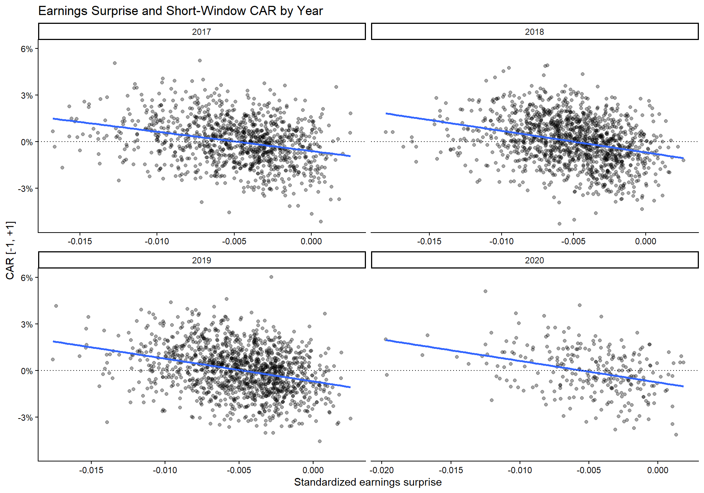
6.9 分析結果の保存
6.9.1 イベント単位の結果
tbl_event_window_wide <- tbl_event_window_return |>
select(
event_ID,
window_ID,
CAR_window
) |>
pivot_wider(
names_from = window_ID,
values_from = CAR_window,
names_prefix = "CAR_"
)
tbl_event_output <- tbl_market_model |>
semi_join(
tbl_abnormal_return |>
distinct(event_ID),
by = "event_ID"
) |>
left_join(
tbl_event_window_wide,
by = "event_ID"
) |>
arrange(event_ID)6.9.2 日次結果
tbl_event_daily_output <- tbl_abnormal_return |>
select(
event_ID,
firm_ID,
event_date,
event_trade_date,
event_year,
event_strength,
earnings_surprise,
relative_day,
date,
R,
R_M,
normal_return,
AR,
CAR,
alpha,
beta,
sigma_AR,
r_squared,
estimation_observations
)
tbl_event_summary_output <- tbl_daily_statistics |>
arrange(
event_strength,
relative_day
)6.9.3 Parquet保存
list_output <- list(
event_results = tbl_event_output,
event_daily = tbl_event_daily_output,
event_summary = tbl_event_summary_output
)
vec_output_file <- c(
event_results = file.path(
"events",
"event_study_results.parquet"
),
event_daily = file.path(
"events",
"event_study_daily.parquet"
),
event_summary = file.path(
"events",
"event_study_summary.parquet"
)
)
vec_output_path <- purrr::imap_chr(
list_output,
\(tbl_output, output_name)
write_derived_parquet_file_LFL(
tbl_output,
vec_output_file[[output_name]]
)
)
tibble(
output_name = names(vec_output_path),
path = unname(vec_output_path)
)
#> # A tibble: 3 × 2
#> output_name
#> <chr>
#> 1 event_results
#> 2 event_daily
#> 3 event_summary
#> path
#> <chr>
#> 1 C:/AnalyticFin/Projects/LagrangeFinance/data/derived/events/event_study_resul…
#> 2 C:/AnalyticFin/Projects/LagrangeFinance/data/derived/events/event_study_daily…
#> 3 C:/AnalyticFin/Projects/LagrangeFinance/data/derived/events/event_study_summa…6.9.4 保存結果の検証
tbl_output_verification <- purrr::imap_dfr(
list_output,
\(tbl_expected, output_name) {
output_file <- vec_output_file[[output_name]]
output_path <- vec_output_path[[output_name]]
tbl_check <-
read_derived_parquet_file_LFL(
output_file
)
stopifnot(
nrow(tbl_check) ==
nrow(tbl_expected)
)
stopifnot(
identical(
names(tbl_check),
names(tbl_expected)
)
)
tibble(
output_name = output_name,
output_file = output_path,
rows = nrow(tbl_check),
columns = ncol(tbl_check),
size_bytes =
file.info(output_path)$size
)
}
)
tbl_output_verification
#> # A tibble: 3 × 5
#> output_name
#> <chr>
#> 1 event_results
#> 2 event_daily
#> 3 event_summary
#> output_file
#> <chr>
#> 1 C:/AnalyticFin/Projects/LagrangeFinance/data/derived/events/event_study_resul…
#> 2 C:/AnalyticFin/Projects/LagrangeFinance/data/derived/events/event_study_daily…
#> 3 C:/AnalyticFin/Projects/LagrangeFinance/data/derived/events/event_study_summa…
#> rows columns size_bytes
#> <int> <int> <dbl>
#> 1 3960 18 467503
#> 2 241560 19 9222492
#> 3 305 15 335646.10 まとめ
本章では、決算発表の翌取引日をイベント日0として、マーケット・モデルによるイベントスタディを実施した。推定期間にはイベント日の130取引日前から31取引日前までの100日を使用し、イベント期間には30取引日前から30取引日後までの61日を使用した。
決算サプライズは、実現利益と予想利益の差を期首時価総額で標準化し、年度ごとに5群へ分類した。イベント別にマーケット・モデルを推定し、通常リターン、異常リターン、累積異常リターンを計算した。さらに、日次のAARとCAAR、複数イベント・ウィンドウのCAR、正のCARとなったイベントの割合、決算サプライズと短期CARの回帰関係を確認した。
反復処理にはpurrrを利用し、明示的なループは使用していない。データ探索、入力検証、イベント日0の設定、イベント・パネルの作成、マーケット・モデルの推定、AR・CARの計算、イベント・ウィンドウ集計は、utility_LFL.Rの共通関数へ分離した。
結果は次の3ファイルに保存される。
data/derived/events/event_study_results.parquet
data/derived/events/event_study_daily.parquet
data/derived/events/event_study_summary.parquet